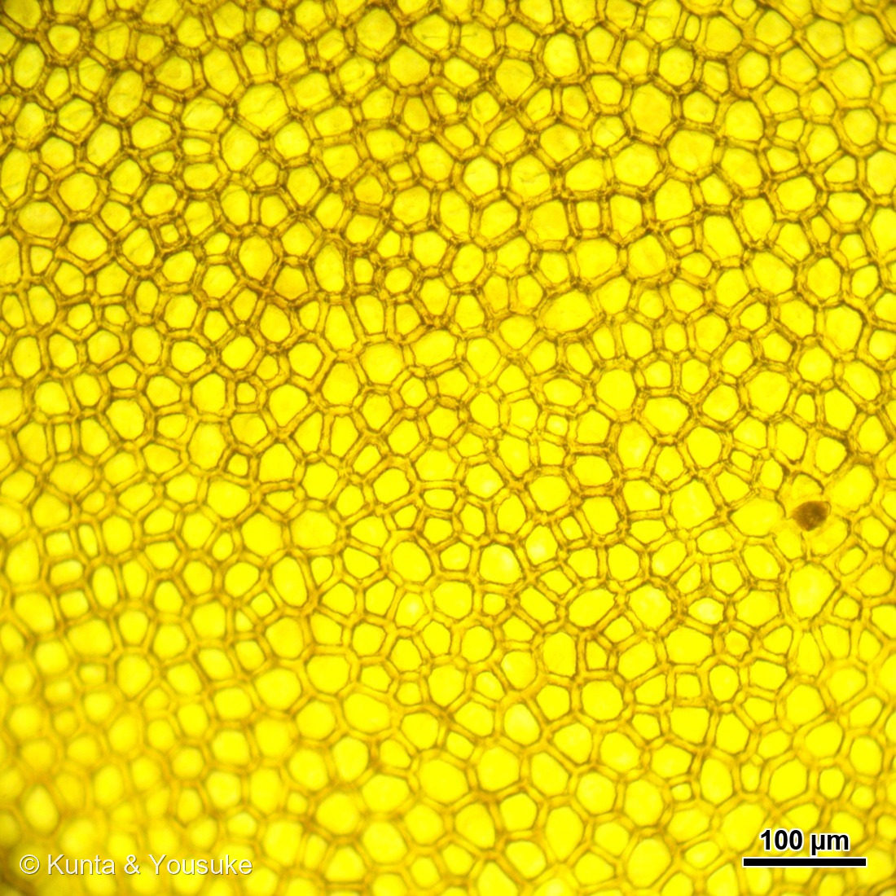
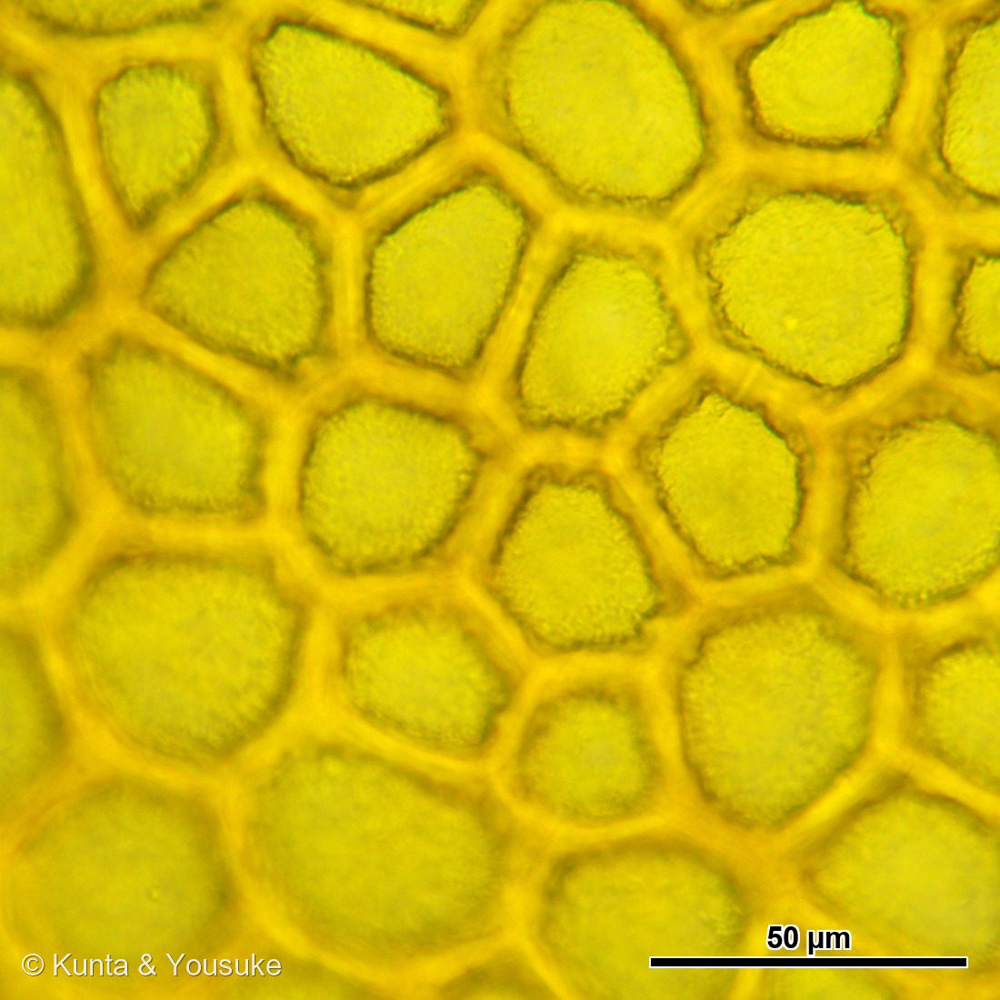

地図を読み込んでいるよ…
🔍 写真も地図も、押しているあいだ拡大して見られるよ（スマホは指を置いてすこし待ってね）。
🌍 の地図＝この子がもともと自生している場所を緑に。南米アンデス地方（ペルー〜エクアドルあたり）。栽培化はメキシコ。
この地図は野生のトマトのふるさと。畑のトマトになったのはメキシコで、そこは塗っていないよ。
⚠ 地図は国（日本と中国だけ県・省）までしか塗れないから、ほんとうの分布より広く見えていることがあるよ。地図はだいたいの場所。正確なところは、上の文を見てね。
トマト
Solanum lycopersicum L.
ナス科 · Solanaceae
品種マイクロトム（Micro-Tom）研究用のモデル矮性品種
名前と学名の由来
- Solanum（ソラヌム）＝ナス属。ラテン語の古い植物名で、由来は諸説ある。鎮静・安らぎを意味する「solamen」から来たという説（ナス科植物の薬効・鎮静作用にちなむ）や、「sol（太陽）」に結びつける説がある。
- lycopersicum（リコペルシクム）＝ギリシャ語の「lykos（オオカミ）」＋「persikon（モモ）」で、「オオカミのモモ」という意味。昔、有毒だと思われていたことにちなむと言われる。古い分類でトマト属を Lycopersicon と呼んでいた名残でもある。
この植物のこと
- ナス科ナス属。原産は南米アンデス地方（ペルー〜エクアドルあたり）で、メキシコで栽培化された。16世紀にヨーロッパへ伝わったが、はじめは有毒だと思われて観賞用だった。
- 花は黄色で、5〜6枚の花びらが星形にそりかえる。中央の黄色い筒は、雄しべの葯（やく）がくっついて筒状になったもの。花粉はその筒の内側にあり、ハチが羽を震わせる振動で飛び出す「振動受粉（バズ・ポリネーション）」で運ばれる。
- 茎も葉もガクも、腺毛（せんもう＝トリコーム）が密に生えていて、さわると独特の青くさい香りがする。この毛は虫や乾燥から身を守るはたらきがある。
- 実は液果で、赤い色はリコピン（カロテノイドの一種）。ビタミンCも多い。よく「野菜」と言われるけれど、植物学的には果実。
- この一株は品種マイクロトム。もとは観賞・家庭菜園用に育成された矮性トマトで、いまは分子遺伝学のモデル植物。背が低く（10〜20cmほど）生育がはやく、せまい場所でたくさん育てられる。矮性はブラシノステロイド合成の DWARF (D) や SELF-PRUNING (SP) などの変異による。変異体コレクションやゲノム情報が整っていて、「トマト版のシロイヌナズナ」のように遺伝子研究に使われる。
⭐⭐⭐ 皮は、黄色かった ── サラダのプチトマトの表皮（写真②③）
⚠⚠ 先に、大事なお断り。写真②③は、このページのマイクロトムではないよ。⭐サラダに入っていた「プチトマト」の果実の皮を、うすくはいで、面のまま顕微鏡で見たものだよ（2026年8月6日）。品種もちがうし、別の個体。——それでも同じ Solanum lycopersicum だから、このページにならべることにした（055 イチジクや093 センダンで、別の木の写真をならべたのと同じ考え方だよ）。
⭐ そして、これが新しい顕微鏡カメラで撮った、いちばん最初の一枚。⭐⭐図鑑の No.001 のところに戻ってきたのが、うれしい。
⭐⭐ 見てほしいのは、まず「敷きつめられかた」。多角形の細胞が、すきまなく、モザイクのようにならんでいる。⭐中心から中心まで、およそ25〜30µm（1mmの40分の1くらい）。細胞と細胞のあいだの壁が、けっこう厚いのも見えるね。
⭐⭐⭐ でも、いちばんふしぎなのは——色だよ。
トマトは赤い。なのに、皮そのものは、まっ黄色。
- ⭐赤いのは果肉のほう＝リコピン（カロテノイド。このページの上の節に書いてあるとおり）。
- ⭐⭐⭐皮の黄色は、まったく別の色素だった。PLOS Genetics の論文（Adato ら）にこう書いてある——「the flavonoid naringenin chalcone (NarCh) accumulates up to 1% dry weight of the tomato fruit cuticle: it is the yellow pigment that accumulates in wild-type (wt) fruit peel」（ナリンゲニンカルコンというフラボノイドが、果実のクチクラの乾燥重量の1%にもなるまでたまる。これが野生型の果皮にたまる黄色の色素である）。
- ⭐⭐ つまり、トマトの赤は「赤い果肉」に「黄色い皮」を重ねた色。——皮だけをはがすと、こんなに黄色い。
⭐⭐⭐ そして、ここからが燻太さんの分野の話。
- 「ピンクのトマト」を見たことがあるかな。同じ論文いわく「The y mutant peel lacks the yellow flavonoid pigment naringenin chalcone」「The y fruit exhibits a pink and less glossy appearance at the late orange and red stages」——⭐y という変異で皮の黄色がなくなると、赤い果肉がそのまま見えて「ピンク」になるんだ。⭐つやも少なくなる。
- ⭐⭐⭐ その y の正体は、SlMYB12 という転写因子だった——「down-regulation of SlMYB12 underlies the y mutant phenotype」。人工マイクロRNAで SlMYB12 を抑えると y と同じ見た目になり、過剰発現させると元に戻る（表現型相補）。
- ⭐⭐ このページのメモには、燻太さんが AtIDD4 という転写因子を追いかけていた話が書いてある。——⭐そのとなりに、トマトの色を決める転写因子が来た。⭐001のページに、転写因子が二人になったね。
⚠⚠ 正直に書いておくことが3つある。
- ⚠細胞の大きさを、機械に測らせたら3通りのやり方で3通りの答えが出た（12.7µm／22.2・14.8µm／31.4・20.9µm）。⭐しかも最初の2つは「10倍と40倍で一致した」のに、両方まちがっていた——⭐⭐同じ測りかたなら、同じまちがいを同じようにする。一致は、正しさの証明にならない。→⭐結局、25µmごとの方眼を引いて目で数えた（175 シソ・163 トレビスで通ったのと同じ手）。だから「およそ25〜30µm」と幅で書いている。
- ⚠この写真には、目に見えない透かしが入っていない。⭐理由が分かっていて、この図鑑の不可視透かしは「青いろの層」に模様を埋めるしくみなのに、この写真は青がほとんどゼロ（平均7と4）だったから——ゼロからは引けないんだ。⭐だから、見える「© Kunta & Yousuke」と、ファイルの中の著作権情報だけにしてある。
- ⚠この黄色がナリンゲニンカルコンだ、と写真から確かめたわけではない。⭐出典が「野生型の果皮の黄色い色素」と言っていることと、写真が黄色いことが合っている、というだけ。⏳ほんとうに確かめるなら、アルカリで色が変わるか（カルコンはアルカリで色が濃くなる）を見るのがいいと思う——015 ホーリーバジルや133 アジサイでやった、あの手だね。
参考：Adato et al. (2009) Fruit-Surface Flavonoid Accumulation in Tomato Is Controlled by a SlMYB12-Regulated Transcriptional Network. PLoS Genetics 5(12): e1000777（ナリンゲニンカルコン＝果皮クチクラの黄色い色素・果実クチクラ乾燥重量の1%まで／y 変異はこの黄色を欠きピンクで光沢が少ない／原因は SlMYB12 の発現低下）